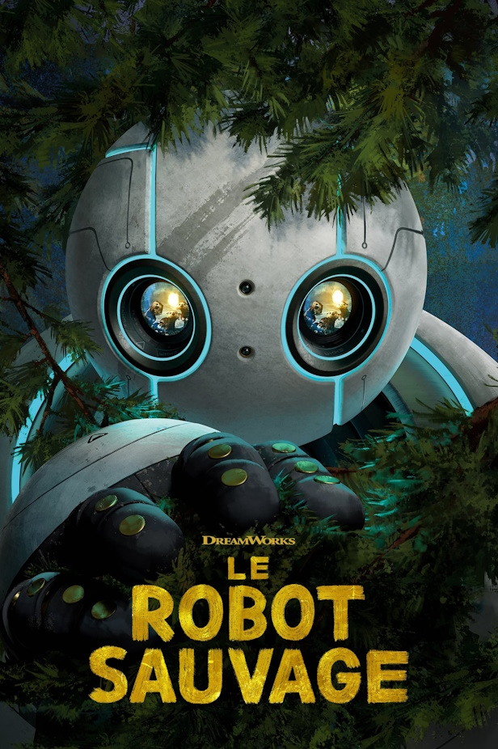

Le Robot Sauvage (2024) HD

L’incroyable épopée d'un robot -- l'unité ROZZUM 7134 alias "Roz" -- qui après avoir fait naufrage sur une île déserte doit apprendre à s'adapter à un environnement hostile en nouant petit à petit des relations avec les animaux de l'île. Il finit par adopter le petit d’une oie, un oison, qui se retrouve orphelin.